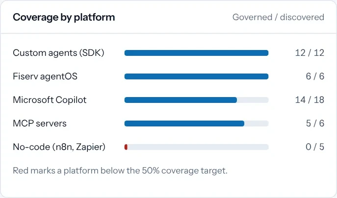
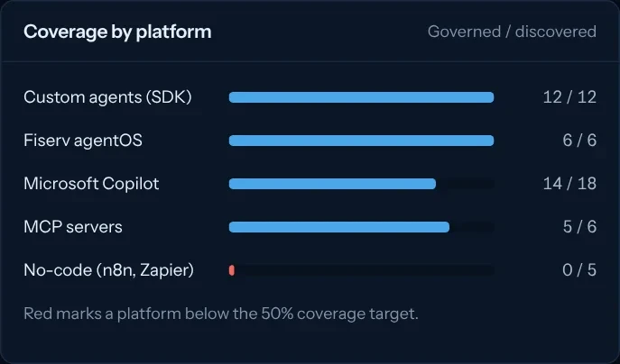
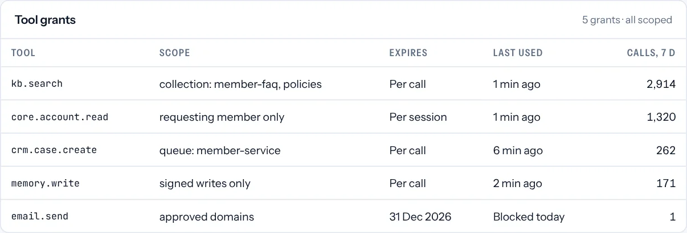
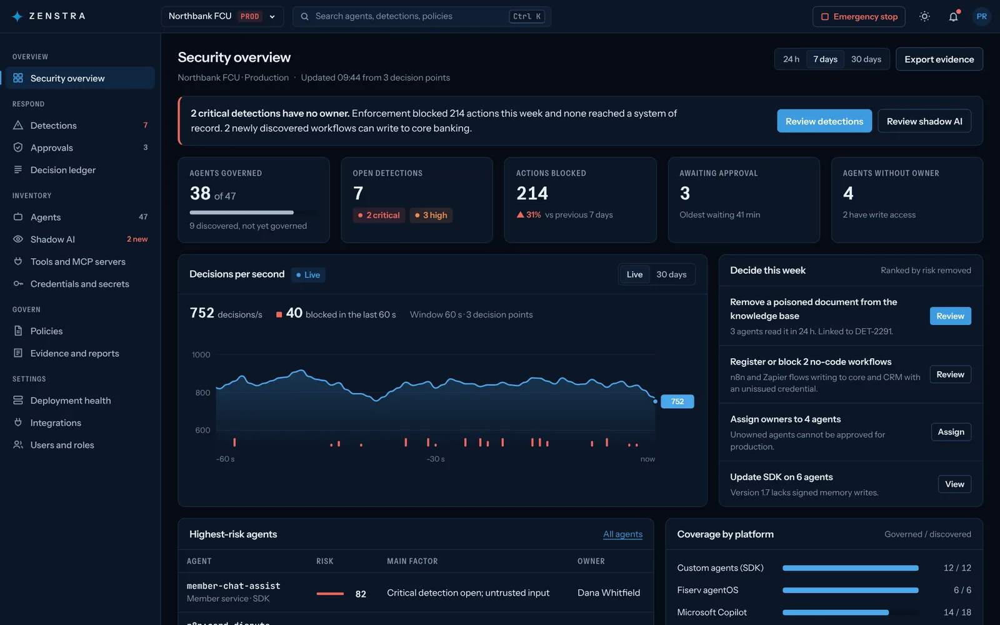

A living inventory.
Every agent and connection, tracked automatically, with a named owner and the platform it runs on.


Zenstra for credit unions
Zenstra makes it visible.governed.examiner-ready.
Core platforms, copilots, lending and fraud tools are adding agents faster than policy can follow. Zenstra gives every one of them an owner, a scope and a record.
Fiserv agentOS, Jack Henry and Temenos ship agent runtimes inside your core.
Copilot, ChatGPT and Gemini, often live before a policy exists.
Agents that touch loan files from application to approval.
SAR-prep and pattern agents with standing access to transactions.
Chat and voice agents sharing a knowledge base with staff assistants.
n8n and Zapier wiring agents into core systems without IT seeing it.
| What examiners ask | Vendor defaults | With Zenstra |
|---|---|---|
| Which agents do you run? | Per platform, if at all | Every agent and connector, across platforms |
| What can each one reach? | Standing credentials | Scoped grants that expire with the task |
| Who approved it? | A policy written at rollout | A recorded review before production |
| How do you stop it? | A different switch per vendor | One revocation across platforms, in seconds |
| Show me what it did. | Logs spread across vendors | One tamper-evident record of every decision |
Copilots and no-code flows wired into core, found before an examiner finds them.
A cryptographic identity for every agent, revoked when access drifts.
Each connector into Fiserv, Jack Henry or Temenos becomes a scoped grant.
An agent reaching beyond its task is caught before it reaches a member's file.
Member chat and voice agents isolated from malicious input.
Shared knowledge layers that cannot be poisoned across sessions.
Your acceptable-use policy as enforced code, not a PDF.
A tamper-evident record of every decision, ready for an NCUA examiner.
Every agent and connection, tracked automatically, with a named owner and the platform it runs on.


Least-privilege proof generated as grants are issued, with unused access flagged for removal.


Every action recorded, not just the flagged ones, and exported as an examination pack on demand.
See the examination pack

No. It sits underneath them. Your core provider's controls still apply; Zenstra adds an inventory, a policy and a revocation switch that work across every platform, so your institution can verify them independently.
The endpoint app goes out through your existing device management. The gateway runs in your environment in front of core and agent platforms. Most credit unions start with a pilot group and one platform.
No. Staff keep using the tools they already use. They only see Zenstra when an action needs approval or is blocked, with a plain explanation.
Prompts and payloads are evaluated inside your environment. Only decisions and redacted evidence reach the Zenstra control plane. The Trust Center lists exactly what leaves and what never does.
See Zenstra find, govern and record the agents already running in a credit union like yours.